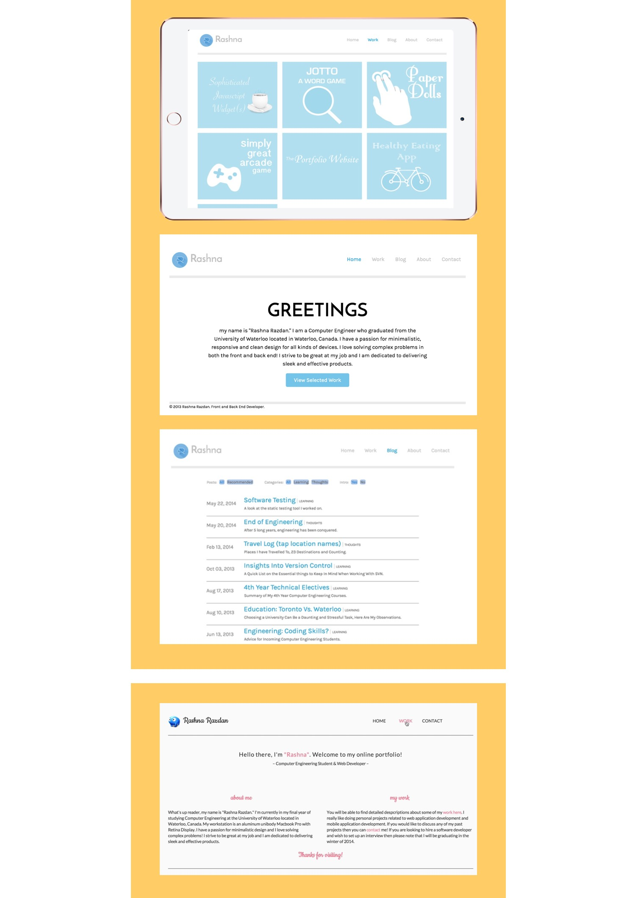
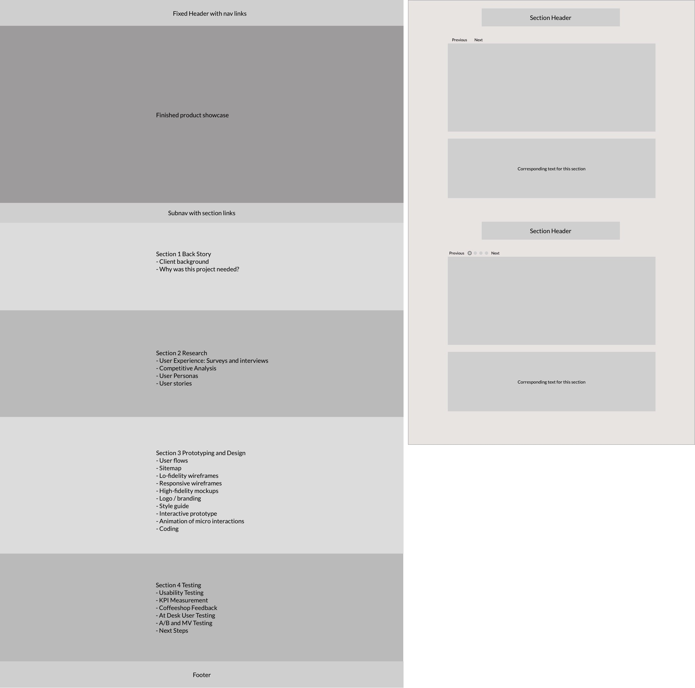
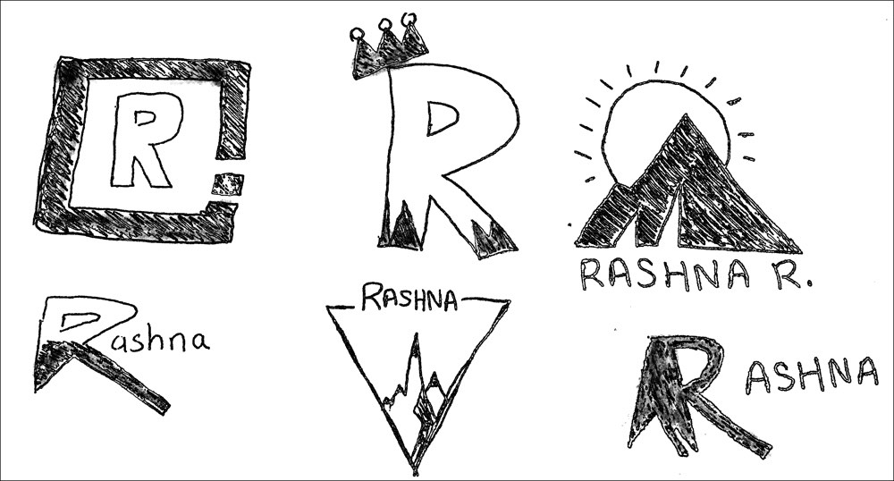
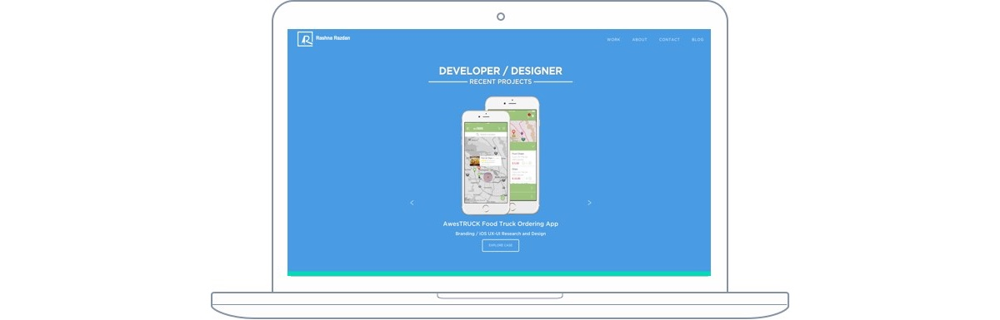

I wanted to upgrade my portfolio website to reflect my current projects and skills. Previous versions of my portfolio site are seen below:  The main goal of my current portfolio website was to create a clean and professional design that focused on my projects.
Competitive Review: I spent time looking at a series of designer and non-designer portfolios. I started off looking at portfolios submitted to Awwwards. One that I really loved was Justin Edmund's – for its visual cleanliness, direct and informative communication about past projects and plethora of portfolio images.
Rough user flows were sketched out to ensure that all actions had short and simple user flows. User stories included:
Low fidelity wireframes were created in Sketch, some of these are seen below. The higher fidelity wireframes and designs were built directly on top of these wireframes:  Many variations of the portfolio's logo was sketched by hand, this keeps me from getting caught up in the technology, and instead allowed me to focus on the best possible solution, freeing me to take risks that I might not otherwise have taken.  I knew that I wanted to incorporate the mountains, which represented my love for the outdoors and my favorite landscape, into my logo. The final logo is seen below: With the design work done, all that remained was to code it all! This website runs on Jekyll. Snapshot of the current homepage: 
I used Peek for user testing. I also watched users in real time as they navigated the website to see which areas received more user attention and to test if the navigation was intuitive.
The end result of this project was a clean, professional portfolio website that highlighted my most recent projects. The website is responsive and thus can be viewed on any mobile device. The website clearly conveys my skills and how to get in touch with me.